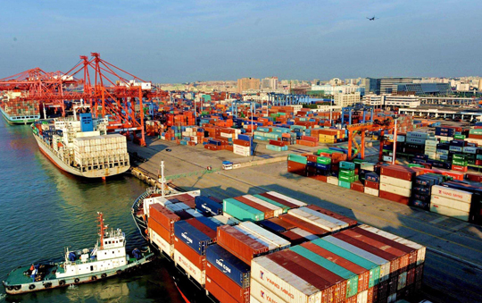
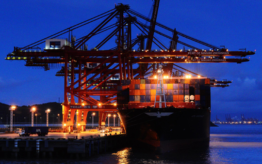

港口
（英文名：coastal port）一般位于海，江，河，湖，水库沿岸，具有水路联运设备以及条件供船舶安全进出和停泊的运输枢纽，是水陆交通的集结点和枢纽，工农业产品和外贸进出口物资的集散地，船舶停泊、装卸货物、上下旅客、补充给养的场所。
（英文名：coastal port）一般位于海，江，河，湖，水库沿岸，具有水路联运设备以及条件供船舶安全进出和停泊的运输枢纽，是水陆交通的集结点和枢纽，工农业产品和外贸进出口物资的集散地，船舶停泊、装卸货物、上下旅客、补充给养的场所。
%20%20秦皇岛港.png)
秦皇岛是我国煤炭、原油运输的主要港口，也是其他进出口货物的集散口岸，有能源运输枢纽之称
上海港控江襟海，地处长三角水网地带，水路交通十分发达。目前，上海市内河港区共有3250个泊位，最大靠泊能力为2000吨级。上海港的水陆交通便利，集疏运渠道畅通，通过高速公路和国道、铁路干线及沿海运输网可辐射到长江流域甚至全国，对外接近世界。截至2016年底，上海港已经与全球214个国家和地区的500多个港口建立了集装箱货物贸易往来，拥有国际航线80多条。2016年，上海港完成货物吞吐量7.02亿吨，完成集装箱吞吐量3713万标准箱。
舟山，原名定海，素有“东海鱼仓”和“祖国渔都”之美称，是一个以群岛设市的地级行政区划，位于我国东南沿海，浙江省舟山群岛，拥有渔业、港口、旅游三大优势。舟山是中国最大的海水产品生产、加工、销售基地。 浙江省省长吕祖善正式向国内外宣布：“宁波－舟山港”名称自2006年1月1日起正式启用，原“宁波港”和“舟山港”名称不再使用，宁波—舟山港管理委员会同时成立。看似只是两个名称的叠加，但它的意义远非简单意义上的“1+1=2”


中国政府网 | 关于本网 | 网站声明 | 网站地图 | 联系我们 | 网站纠错
网站单位：国务院办公厅 网站运行维护单位：中国政府网运行中心
相关链接：全国人大 | 全国政协 | 国家监察委员会 | 最高人民法院 | 最高人民检察院
网站标识码bm00000000 京ICP备88888888号 京公网安备88888088888888号

中国政府网微信、微博
%20%20南京港.png)
%20%20锦州港.png)
%20%20天津港.png)
%20%20宁波港.png)
%20%20大连港.png)
%20%20青岛港.jpg )
%20%20温州港.jpg)
%20%20日照港.png)
%20%20湛江港.png)
%20%20广州港.png)
%20深圳港.png)